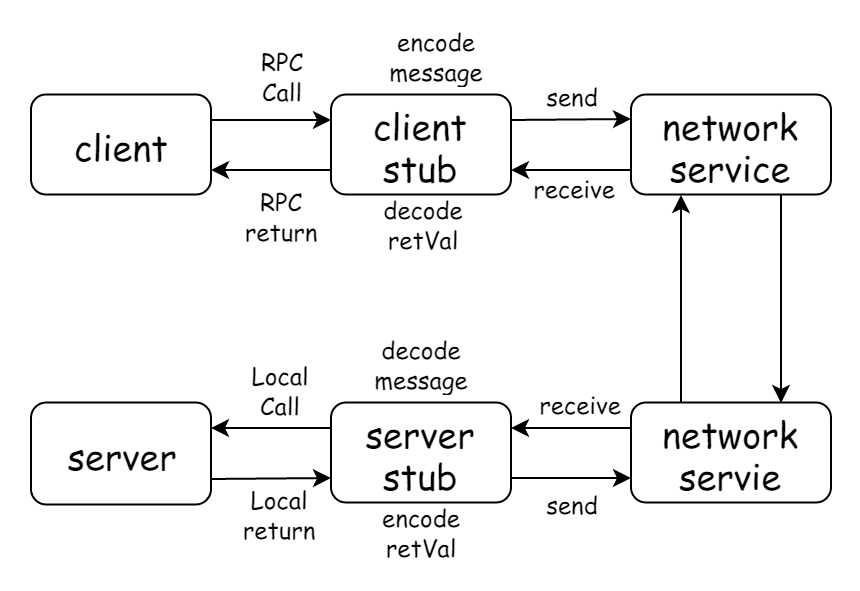

gRPC 浅谈与实践
- Docker Golang BackEnd
由于不同的环境下面的例子可能会存在一些误差，下面列出本机环境：
Docker -v：Docker version 18.09.1, build 4c52b90docker-compose -v：docker-compose version 1.23.2, build 1110ad01go version: go version go1.12.4 darwin/amd64system_profiler SPSoftwareDataType: macOS 10.14.3 (18D42) Darwin 18.2.0- IDE golang latest
RPC
RPC 全名为 Remote procedure call ,直译过来就是 远程过程调用 ，也就是说两台服务器A，B，一个应用部署在A服务器上，想要调用B服务器上应用提供的函数/方法，由于不在一个内存空间，不能直接调用，需要通过网络来表达调用的语义和传达调用的数据。
调用的基本流程可以看下图：

RPC 的协议可以简单分成两大类。
一类是通讯层协议，通讯层协议一般是和业务无关的，它的职责是将业务数据打包后，安全、完整的传输给接受方，HSF、Dubbo、gRPC 这些都是属于通讯层协议。
另一类是应用层协议。约定业务数据和二进制串的转换规则，常见的应用层协议有 Hessian，Protobuf，JSON。
why RPC
为什么RPC呢？就是无法在一个进程内，甚至一个计算机内通过本地调用的方式完成的需求，比如比如不同的系统间的通讯，甚至不同的组织间的通讯。由于计算能力需要横向扩展，需要在多台机器组成的集群上部署应用，
http vs RPC
HTTP 调用其实也是一种特殊的 RPC 。RPC 可以基于 HTTP 协议实现，也可以直接在 TCP 协议上实现。
HTTP 与 RPC 的关系就好比普通话与方言的关系，普通话效率不高，废话较多，但是胜在通用。方言用的人少，短小精炼，理解起来也较为困难（保密性好），效率高。
HTTP1.0 协议时，HTTP 调用还只能是短链接调用，一个请求来回之后连接就会关闭。HTTP1.1 在 HTTP1.0 协议的基础上进行了改进，引入了 KeepAlive 特性可以保持 HTTP 连接长时间不断开，以便在同一个连接之上进行多次连续的请求，进一步拉近了 HTTP 和 RPC 之间的距离。
但是 HTTP 还是存在很多硬伤，比如通用定义的 http1.1协议的 TCP 报文包含太多废信息、序列化效率不高，以及三次握手四次挥手带来的 RTT 延迟，以及 Head of line blocking 、服务端推送 等等。注定了在高性能要求的下，不适合用做线上分布式服务之间互相使用的通信协议。
当 HTTP 协议进化到 2.0 之后，Google 开源了一个建立在 HTTP2.0 协议之上的通信框架直接取名为 gRPC，也就是 Google RPC，这个 gRPC 也就是本文将要详细介绍的通信框架。
需要注意的是，gRPC 由于协议还是基于 HTTP 2，HTTP 2 实际上也没有全部解决 HTTP 1 版本的问题，要不然就不会有 QUIC（HTTP3），只是在取舍之间选择了 HTTP 2 作为底层协议再封装 服务发现、 负载均衡 等高级 RPC 特征，这个具体会在下文详细分析
并且由于 gRPC 基于 HTTP 2 ，所以也是不支持 UDP 协议的，只能等待 HTTP 3
gRPC
gRPC 是 google 开源的高性能跨语言的 RPC 方案，并且采用 HTTP 2 作为通信层协议。gRPC 的设计目标是在任何环境下运行，默认使用 protobuf 作为 接口描述语言 (IDL interface description language) 及底层消息通信格式。
支持可插拔的负载均衡，跟踪，运行状况检查和身份验证。
它不仅支持数据中心内部和跨数据中心的服务调用，它也适用于分布式计算的最后一公里，将设备，移动应用程序和浏览器连接到后端服务。
可以看这篇文章 gRPC动机和设计原则
很多主流库以及设施已经在使用 gRPC，比如 k8s 、TensorFlow
在人工智能领域，RPC 也很重要，著名的 TensorFlow 框架如果需要处理上亿的数据，就需要依靠分布式计算力，需要集群化，当多个分布式节点需要集体智慧时，就必须引入 RPC 技术进行通讯。Tensorflow Cluster 的 RPC 通讯框架使用了 Google 内部自研的 gRPC 框架。
protobuf
protobuf 是谷歌推出的一种轻便高效的结构化数据存储格式，把结构化的数据序列化。常用以存储数据、作为网络通信的数据载体。具有提供多种编程语言的 API、跨平台和可扩展的特性。比 JSON 和 XML 更小、解析速度更快、更易于程序员上手。
gRPC 采用 Protobuf 作为应用层协议。
Protobuf 是谷歌提出来的数据交换协议，使用方式可以查看对应文档各个语言的 tutorial 。
你需要在这里下载 protoc binary file 并确保可执行文件在 PATH 当中 : protobuf
或者也可以通过下面方式安装，默认装在了 $GOPATH/bin 之下，所以也要确保这个目录在 PATH 下：
go get -u github.com/golang/protobuf/protoc-gen-go
gRPC web
准确来说 gRPC 设计上是分层的，底层支持不同的协议，下面是 gRPC 支持协议，我们要采用 gRPC web ：
由于我们是在 web 环境当中测试，所以需要额外下载对应的插件：protoc-gen-grpc-web
advantage and disadvantage
我们现在知道 gRPC 是基于 HTTP 2 的，那它有什么优点呢？
- HTTP/2 是一个公开的标准，并且是一个经过实践检验的标准
- HTTP/2 天然支持物联网、手机、浏览器
- 基于HTTP/2 多语言的实现容易，每个流行的编程语言都会有成熟的HTTP/2 Client
- HTTP/2支持 Stream 和 流控
- HTTP/2 天然支持 ssl
- 鉴权成熟，从HTTP/1发展起来的鉴权系统已经很成熟了，可以无缝用在HTTP/2上
缺点呢？
- RPC 的元数据的传输不够高效
- HTTP/2 标准本身是只有一个 TCP 连接，但是实际在 gRPC 里是会有多个 TCP 连接
- gRPC 选择基于 HTTP/2，那么它的性能肯定不会是最顶尖的。但是对于 gRPC 来说中庸的 QPS 可以接受，通用和兼容性才是最重要的事情。
envoy proxy
引用官网的一段描述：
Envoy is an L7 proxy and communication bus designed for large modern service oriented architectures. The project was born out of the belief that:
"The network should be transparent to applications. When network and application problems do occur it should be easy to determine the source of the problem."

具体详情请看本文尾部的 reference
how and why
Envoy 是作为一个主打 Service Mesh(微服务) 方案的 proxy，也是 cloud native 成员之一
为什么不选 nginx 呢？首先 Nginx 的反向代理早期不支持 http2/grpc ，其次 Nginx 的很多微服务功能都是要买 Nginx Plus 才有。
哈哈，对我个人来说还是因为官方推荐，以及深入理解 cloud native
why golang
我们通过上面的介绍已经知道 gRPC 其实是支持多种语言进行开发，比如 Node，Python，Java 等等。
我还是采用了 golang 作为后端语言，主要原因是 golang 语法简单以及部署方便，相对来说易于上手开发
hello gRPC world
接下来我们会一步步的实现一个简单的 gRPC web 实例
tree
你可以在这里下载本文项目源代码。
然后我们先看一下当前目录结构：tree -I node_modules
.
├── Docker-compose.yml
├── Dockerfile-envoy
├── Dockerfile-envoy-standalone
├── Dockerfile-server
├── README.md
├── envoy-standalone.yaml
├── envoy.yaml
├── protobuf-spec
│ └── helloworld.proto
├── script
│ ├── bootstrap.sh
│ ├── build-client.sh
│ ├── build-server.sh
│ ├── codegen-clinet.sh
│ ├── codegen-server.sh
│ ├── docker-envoy-standalone.sh
│ └── docker-compose.sh
├── server
│ ├── main.go
│ └── protobuf-spec
│ └── helloworld.pb.go
└── web
├── bundle.js
├── index.html
├── index.js
├── package.json
├── protobuf
│ ├── user_grpc_web_pb.js
│ └── user_pb.js
└── webpack.config.js
6 directories, 24 files
environment
首先我们需要准备本文开头列出的系统环境。
其次下载并以及对应的 protobuf 和 protoc-gen-grpc-web 插件，确保它们都是可执行文件：必须加入 PATH 当中。
根据上面的 tree 建立相应的文件目录即可：script 和 protobuf-spec 和 server 以及 web，其他的目录可选
develop it
define protoc
首先我们创建一个 protoc 文件来定义 gRPC service：在 protobuf-spec 目录下面创建文件 helloworld.proto。
具体语法请查看 protocol-buffers，在这文件当中我们定义了 请求信息 和 响应信息，以及提供了一个 RPC 服务：SayHello：
syntax = "proto3";
package helloworld;
service Greeter {
rpc SayHello (HelloRequest) returns (HelloReply);
}
message HelloRequest {
string name = 1;
}
message HelloReply {
string message = 1;
}
接下来我们根据定义的 helloworld.proto 文件生成对应的客户端、服务端工作区源代码。
web code
首先准备好 web 文件目录，我们准备在这个目录下建立一个 webpack-dev-server 来辅助测试与开发
建立 package.json：
{
"name": "web",
"version": "1.0.0",
"description": "",
"main": "bundle.js",
"scripts": {
"protobuf:web": "npx webpack-dev-server --config ./webpack.config.js --watch --port 8081"
},
"author": "",
"license": " MIT",
"dependencies": {
"webpack": "^4.30.0",
"webpack-dev-server": "^3.3.1",
"google-protobuf": "^3.6.1",
"grpc-web": "^0.4.0"
},
"devDependencies": {
"webpack-cli": "^3.3.1"
}
}
index.html 文件
<script src="./bundle.js"></script>
以及 webpack.confg.js 文件：
const path = require('path');
module.exports = {
entry: path.join(__dirname, './index.js'),
output: {
filename: 'bundle.js',
path: path.resolve(__dirname)
}
};
以及最后一个空白的 index.js 来作为代码入口和 webpack 打包入口，最后我们安装 web 依赖：npm i -d 或者 npm i -d --registry=https://registry.npm.taobao.org
生成代码我们可以建立 script/codegen-client.sh，不要忘记 chmod +x -R ./script：
#!/usr/bin/env bash
set -e
proto=$1
if [ -z "$proto" ];then
echo "please prompt at last one argument for input file"
exit
fi
# web
rm -rf ./web/protobuf && mkdir ./web/protobuf
OUT_DIR=./web/protoc-spec
protoc -I=./protobuf-spec $proto.proto \
--js_out=import_style=commonjs:$OUT_DIR \
--grpc-web_out=import_style=commonjs,mode=grpcwebtext:$OUT_DIR
echo "generate client success in directory : $OUT_DIR"
执行 ./script/codegen-client.sh hello 在 ./web/protoc-spec 目录下生成文件。
注意第一个参数
hello是指在./protobuf-spec目录当中我们定义的protoc文件文件名简写
接下来来完善我们的 index.js：
const {HelloRequest} = require('./protobuf/helloworld_pb');
const {GreeterClient} = require('./protobuf/helloworld_grpc_web_pb');
const client = new GreeterClient('http://localhost:9090');
const request = new HelloRequest();
request.setName('gRPC World');
client.sayHello(request, {}, (err, response) => {
if (err) throw err;
console.log(response.getMessage());
});
golang code
golang 上的准备比较简单，首先准备好 GOPATH 在你当前的工作目录下，然后建立 server 目录：
go get -u google.golang.org/grpc
在 server 目录下建立我们的空白服务入口文件 main.go
同样和 web 一样建立 ./script/codegen-server.sh ：
#!/usr/bin/env bash
set -e
proto=$1
if [ -z "$proto" ];then
echo "please prompt at last one argument for input file"
exit
fi
# server
rm -rf ./server/protobuf-spec && mkdir ./server/protobuf-spec
protoc --go_out=plugins=grpc:./server ./protobuf-spec/$proto.proto
echo "generate server code success with ./server/protobuf-spec/$proto.pb.go"
执行后我们会在 ./server/protobuf-spec/ 下得到对应的代码
接下来完善我们的 server 也就是 main.go 文件来实现 gPRC :
package main
import (
"context"
"log"
"net"
"google.golang.org/grpc"
// 注意：这里引入生成后的代码，具体路径要根据你的 GOPATH 来定
pb "grpc/server/protobuf-spec"
)
const (
port = ":8080"
)
// server is used to implement helloworld.GreeterServer.
type server struct{}
// SayHello implements helloworld.GreeterServer.
func (s *server) SayHello(ctx context.Context, in *pb.HelloRequest) (*pb.HelloReply, error) {
log.Printf("Received: %v", in.Name)
return &pb.HelloReply{Message: "Hello " + in.Name}, nil
}
func main() {
lis, err := net.Listen("tcp", port)
if err != nil {
log.Fatalf("failed to listen: %v", err)
}
s := grpc.NewServer()
pb.RegisterGreeterServer(s, &server{})
if err := s.Serve(lis); err != nil {
log.Fatalf("failed to serve: %v", err)
}
}
run it
在启动我们的 gRPC web 之前我们需要配置好 envoy 代理，先建立 envoy-standalone.yaml 文件：
static_resources:
listeners:
- name: listener_0
address:
socket_address: { address: 0.0.0.0, port_value: 9090 }
filter_chains:
- filters:
- name: envoy.http_connection_manager
config:
# print access log to stdout
access_log:
- name: envoy.file_access_log
config:
path: "/dev/stdout"
codec_type: auto
stat_prefix: ingress_http
route_config:
name: local_route
virtual_hosts:
- name: local_service
domains: ["*"]
routes:
- match: { prefix: "/" }
route:
cluster: echo_service
max_grpc_timeout: 0s
cors:
allow_origin:
- "*"
allow_methods: GET, PUT, DELETE, POST, OPTIONS
allow_headers: keep-alive,user-agent,cache-control,content-type,content-transfer-encoding,custom-header-1,x-accept-content-transfer-encoding,x-accept-response-streaming,x-user-agent,x-grpc-web,grpc-timeout
max_age: "1728000"
expose_headers: custom-header-1,grpc-status,grpc-message
enabled: true
http_filters:
- name: envoy.grpc_web
- name: envoy.cors
- name: envoy.router
clusters:
- name: echo_service
connect_timeout: 0.25s
type: logical_dns
http2_protocol_options: {}
lb_policy: round_robin
# container access host
# https://stackoverflow.com/questions/31324981/how-to-access-host-port-from-docker-container/31328031
hosts: [{ socket_address: { address: host.docker.internal, port_value: 8080 }}]
admin:
access_log_path: /tmp/admin_access.log
address:
socket_address: { address: 0.0.0.0, port_value: 9091 }
如果你之前仔细看过文件目录结构，你会发现有后缀为
standaloneenvoy 的配置文件。因为本地开发的时候我们的 server 在 docker 容器之外开发比较方便，所以需要把 envoy 单独处理。
建立 ./script/build-client.sh 来启动我们的 web 服务：
#!/usr/bin/env bash
set -e
cd ../web
npx webpack-dev-server --config ./webpack.config.js --watch --port 8081
和 ./script/docker-envoy-standalone.sh 来方便我们启动 envoy docker 服务
#!/usr/bin/env bash
set -e
containerName=grpc_envoy_standalone
if [ "$(docker ps -q -f name=grpc_envoy_standalone)" ]; then
docker container rm $containerName -f
fi
docker build -t grpc_envoy_standalone -f ./Dockerfile-envoy-standalone .
docker run -d -p 9090:9090 -p 9091:9091 --name $containerName grpc_envoy_standalone
最后 go run ./server/main.go 来启动 server
我们可以在浏览器端访问 localhost:8081，可以在 console 控制台上看到打印出来的 hello gRPC world
具体流程可以大致解释为：8081 为 webpack-dev-server 服务，然后客户端请求 envoy 容器抛出的 9090 端口提供的 restful 服务，envoy 转发到 8080 端口 server 服务上，然后 server 处理后交给 envoy 返回数据。
deploy it
上面的例子只是用来本地开发和 debug，真正部署的时候这里由于复杂度没有采用 k8s 而是简单采用了 docker-compose 作为容器编排，我们先建立 docker-compose.yml ：
version: '3'
services:
envoy:
build:
context: .
dockerfile: Dockerfile-envoy
ports:
- '9090:9090'
- '9091:9091'
networks:
- grpc
server:
build:
context: .
dockerfile: Dockerfile-server
# ports:
# - '8080:8080'
networks:
- grpc
networks:
grpc:
在该文件当中我们指定了 Dockerfile-envoy
FROM envoyproxy/envoy:latest
ADD ./envoy.yaml /etc/envoy.yaml
CMD /usr/local/bin/envoy -c /etc/envoy.yaml
和 Dockerfile-server 来作为 build entry
FROM alpine
ADD server/server /app/server
ENTRYPOINT [ "/app/server" ]
以及 envoy-yaml 来作为 envoy 的 docker-compose 配置文件，这个文件基本上和上面的 envoy-standalone.yaml 一致，只需要修改关键字符串 host.docker.internal 为我们 docker 编排的容器名称 server 就可以了。
建立 ./script/build-server.sh 来生成编译我们的服务器：
#!/usr/bin/env bash
set -e
cd $(dirname $0)/..
export GOOS=linux
export GOARCH=amd64
export CGO_ENABLED=0
go build -o ./server/server ./server
最后直接运行：
./script/build-server.sh
docker network create grpc
docker-compose pull
docker-compose up --build
这样我们就简单成功部署成功了 gRPC 服务
think in further
RPC 框架目前据我所知除了 gRPC 有很多实现，阿里的 java double ，百度的 c++ incubator-brpc，twitchTV 的 go twirp，以及 windows c++ thrift 等等，各有各的优点、缺点，以及擅长处理的痛点。在我看来，没有银弹，性能，接口，易用性都要进行权衡，也要结合实际项目环境去选择。